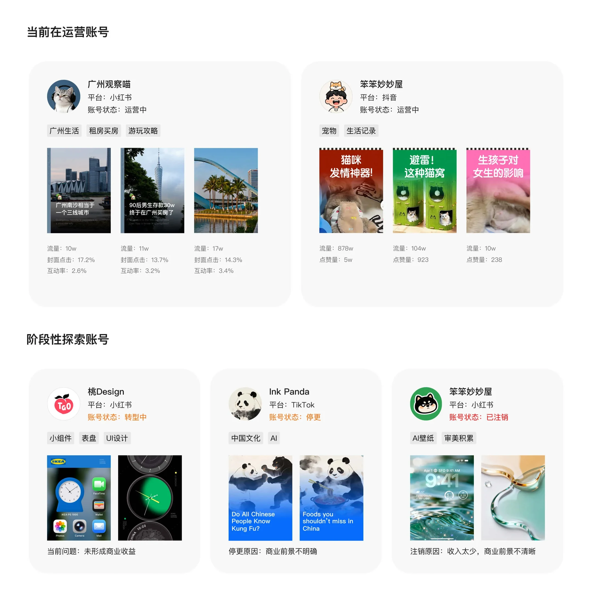
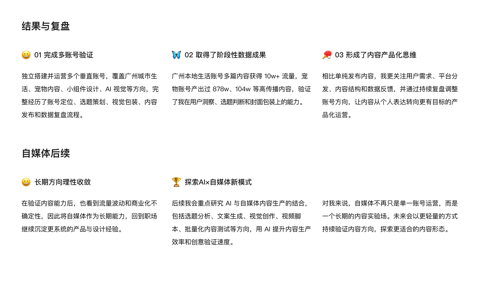

项目概览
时间与类型
时间周期：2025–2026
项目类型：内容表达与自由职业探索
账号定位
通过多个内容账号进行跨领域内容表达尝试，涵盖城市生活、设计视觉、AI内容与创意实验等方向。
创作背景
核心目的不是单一做账号，而是探索非设计专业语境下的内容表达方式，验证个人在内容创作、传播能力与自由职业方向上的可能性。

时间周期：2025–2026
项目类型：内容表达与自由职业探索
通过多个内容账号进行跨领域内容表达尝试，涵盖城市生活、设计视觉、AI内容与创意实验等方向。
核心目的不是单一做账号，而是探索非设计专业语境下的内容表达方式，验证个人在内容创作、传播能力与自由职业方向上的可能性。
运营知识学习：除了内容创作，我也系统补充了账号运营、平台规则与数据复盘知识，包括矩阵布局、内容标签、发布时间、时长策略和选题表搭建。
AI工具辅助：通过 AI 辅助选题分析、文案撰写和脚本生成，让我从关注“内容好不好看”，转向关注用户需求、平台分发、数据反馈与持续迭代。
多账号内容实验：通过不同方向的账号尝试，我初步判断了各内容赛道的投入产出比，并对商业闭环不清晰、收入模型较弱的方向阶段性暂停或转型。
这些尝试让我逐步收敛出更适合持续运营的方向，也提升了内容判断与账号取舍能力。

